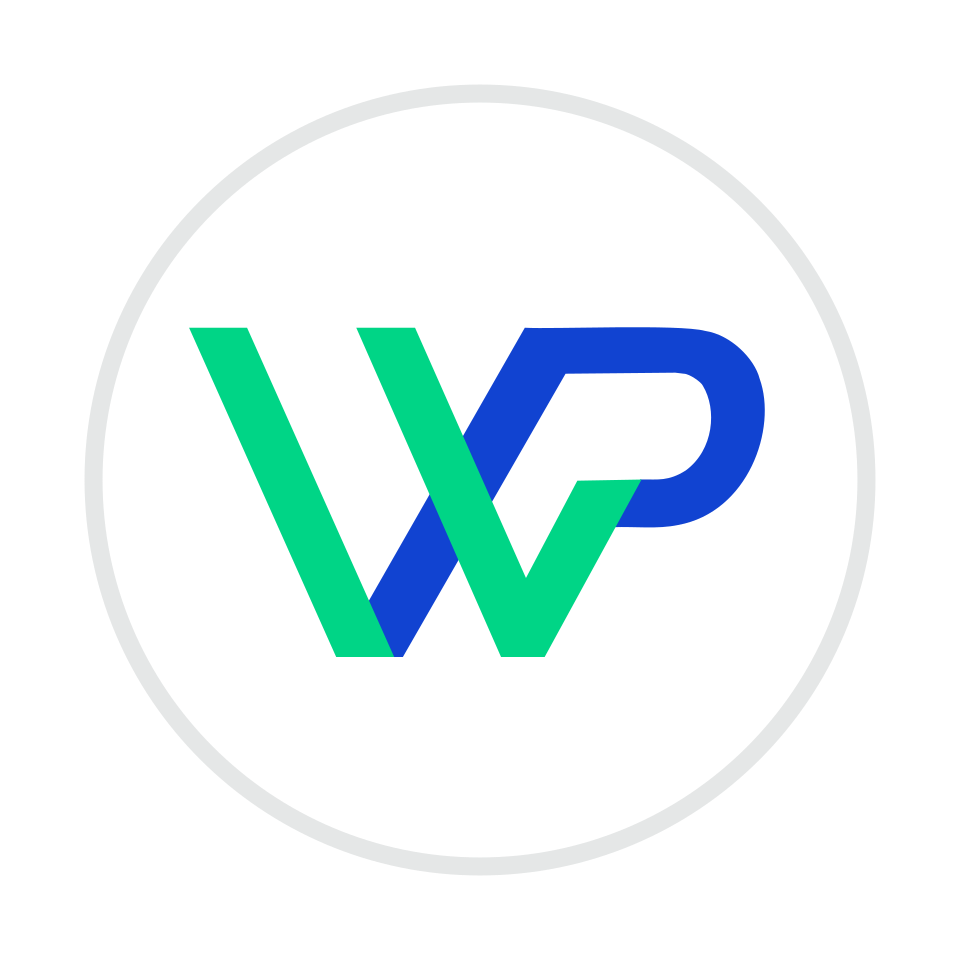

UMEP Cali
Sitio corporativo para una empresa de mantenimiento industrial, con servicios especializados y vías de contacto para solicitar asistencia técnica.

williamppmmCali, Colombia
Desarrollo web Automatización
Cada proyecto empieza por escuchar. Me interesa entender qué quieres resolver y qué esperas conseguir para construir contigo una solución que funcione en la práctica.
Portafolio
Sitio corporativo para una empresa de mantenimiento industrial, con servicios especializados y vías de contacto para solicitar asistencia técnica.
Aplicación para reunir registros operativos en una misma interfaz. El módulo de contadores está en desarrollo, con foco en agilizar la captura y la consulta.
Herramienta de análisis fundamental que reúne datos financieros y evalúa empresas por valoración, calidad, salud financiera y crecimiento.
Plataforma para mostrar calzado femenino, organizar su catálogo y apoyar la venta en línea de un negocio local.
Proyecto de formación ADSO desarrollado en equipo para centralizar el seguimiento operativo y contable de un casino.
Automatización para extraer registros de una plataforma contable y llevarlos a hojas de cálculo que puedan revisarse y procesarse en Excel.
Aplicación local para capturar, validar y consolidar movimientos diarios por sede, con libros anuales de Excel como base de la operación.
Sitio web de una fundación caleña que ofrece talleres prácticos para desarrollar habilidades y apoyar pequeños emprendimientos.
Sobre mí
Soy William Pérez Muñoz, tecnólogo en Análisis y Desarrollo de Software del SENA. Trabajo en procesos contables en Cali. Esa experiencia me ayuda a entender qué datos necesita un negocio y dónde se pierde tiempo al registrarlos.
Empiezo por entender cómo se hace el trabajo hoy. Con esa información diseño la interfaz, organizo los datos y automatizo los pasos que se repiten.
Contacto
Cuéntame qué proceso quieres simplificar o qué necesitas construir.